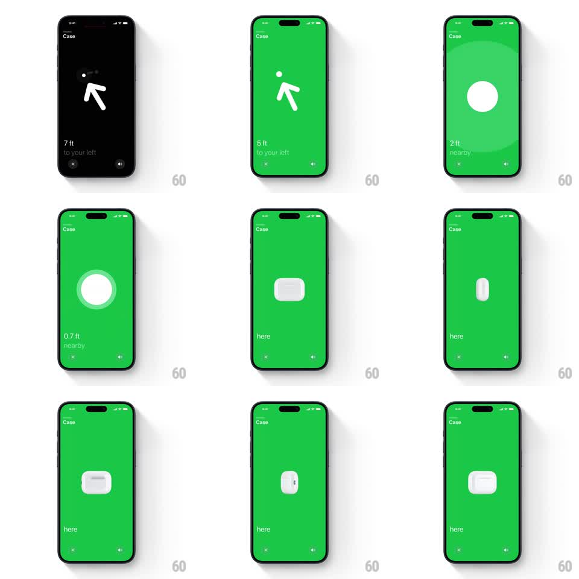

Media
Frame-by-frame

Rebuild this interaction 1:1: Find My's precision finding for an AirPods case - a dark screen with a rotating direction arrow gives way to a green field, a pulsing circle, then a white dot that morphs into a 3D case you can tilt with the phone's gyroscope.

Rebuild this interaction 1:1: Find My's precision finding for an AirPods case - a dark screen with a rotating direction arrow gives way to a green field, a pulsing circle, then a white dot that morphs into a 3D case you can tilt with the phone's gyroscope.
## Integration
Integration: stack-agnostic spec - springs given as stiffness/damping, timed motions as duration + curve; map every value to your framework and animation library of choice.
## Scene
Find My "Case" finding screen: starts near-black with a large white arrow and distance text ("8 ft to your left"), close (X) and mute buttons bottom. As distance shrinks the background floods green: arrow ahead ("6 ft ahead"), a growing white circle ("3 ft to your left"), a pulsing ring ("1.3 ft nearby"), a solid dot ("here"), then the dot morphs into a glossy white AirPods case render.
## Motion spec
Pattern: proximity state machine ending in a gyro-tiltable 3D object.
- Arrow phase: the arrow rotates continuously toward the target with a damped spring (~180/14) so it lags and settles like a compass needle; distance text ticks live.
- Background crossfades black -> green around the 6 ft mark (400ms), green deepening as you close in.
- Arrow shrinks into the white circle at ~3 ft (arrow scale -> 0, circle scale 0.6 -> 1, 300ms); the circle pulses a soft ring outward (1.2s loop) during "nearby".
- Circle collapses to a dot ("here"), then the dot morphs: it rounds into the case silhouette (border-radius + aspect change, 350ms) and the case's 3D shading fades in (200ms).
- Found state: the case tilts in 3D with the gyroscope (rotateX/rotateY mapped from device tilt, damped ~120/16) with moving specular highlights; a subtle idle float (translateY +/-3px, 3s) when still.
## Calibration
- Haptics escalate with proximity (steady -> rapid at "here") - mirror the visual escalation.
- The green is full-bleed and saturated; white elements stay pure.
## Reduced motion
States crossfade (300ms); case renders static without gyro tilt.
## Don't miss
- The arrow never snaps - its spring lag is the finding feel.
- The dot-to-case morph is one shape tween, not a crossfade of two images.